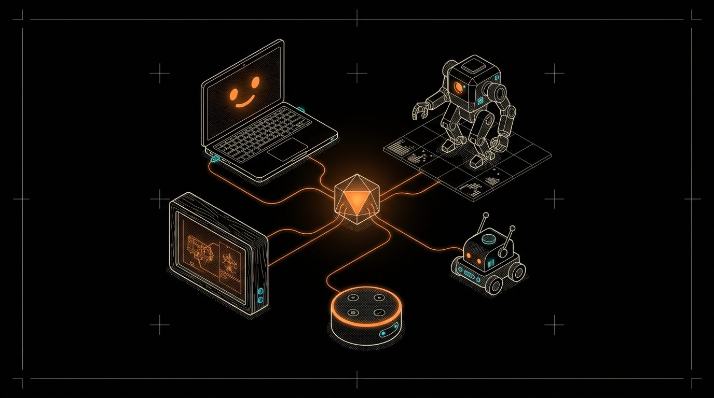
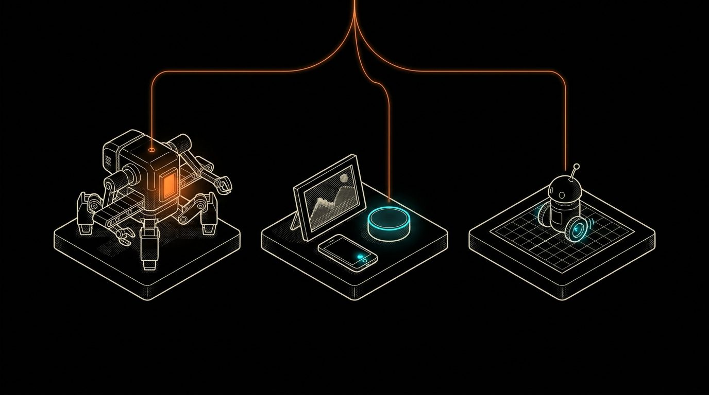
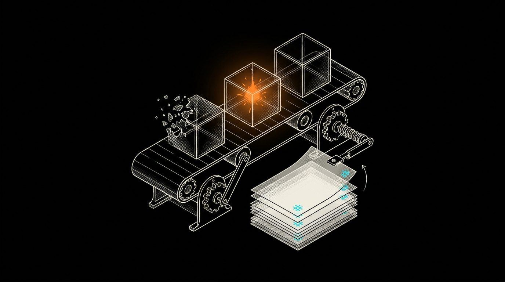

softmax-universe/coglet · architecture · 2026-11-23
One agent brain,
many bodies.
Surfaces host sandboxed Wasm coglets; a hub routes, builds, promotes and rolls them back.

01 · The problem
One brain, bodies it doesn't control.
- First test: Face on the Mac + Mindustry avatar. Talk to the face, the hub decides, the hub drives the avatar.
- Then Baby Bear pods (EO1, Echo Dot, Linux, iOS, Mac) and toy robots in a simulator.
- Different hosts: Swift, JVM, Go, 32-bit ARM, iOS (no JIT).
- Different clocks: 20 ms audio frames, game ticks, hourly frames.
- Code changes while live: every change gated, replayable, reversible.
02 · Vocabulary
Surface, Coglet, Hub.
SURFACE
Adapter embedded in host software.
- owns real-time I/O
- grants capabilities
- supervises runtime, kill switch
face-mac · game adapter · pods
COGLET
Code in a Wasm sandbox inside a surface.
- only granted capabilities
- one repo, identity, files
- runs only when woken
never talks to another coglet directly
HUB
Runs anywhere; coglets dial in.
- routes all traffic
- builds, promotes, rolls back
- built from coglets on a fixed kernel
kernel · fast loop · factory
02 · Topology
One cogletd per device, many coglets, one protocol.
03 · Git control plane
A coglet is a git repo.
coglet repo ├── src/ ├── bin/step.wasm # built + committed by hub ├── prompts/ └── manifest refs refs/heads/hub refs/published/main refs/heads/logs
- Hub builds and commits
bin/step.wasm; devices never compile. - One writer per ref: code pushes never conflict with logs.
- Logs: JSONL appends, batch-committed (~30 s / rotation).
/datais private, never synced through git.
03 · Refs in motion
Code lands only at a step boundary.

04 · The runtime
Event-driven, fresh instance per wake.
cogletd: one Rust runtime; sidecar binary or C ABI library (iOS).- Wakes on surface events, inbox appends, LLM responses, timers. Idle costs nothing.
- Fresh Wasm instance per wake: fuel cap + deadline interrupt (proven on the WAMR interpreter; AOT pending).
- State = files: copy-on-write, content-addressed, a tree hash per step.
- Deterministic replay from journaled event batches + recorded LLM answers.
04 · One wake, event → action
Events in, actions out, files as state.
04 · The contract
Plain core Wasm. One export.
- Export
handle(events, step, logical_time, seed) - Imports: read state · emit action · set timer · LLM request · log
- CBOR bytes, a few host fns, no component model
- Files:
/codero ·/dataprivate ·/logsappend
- No wall clock, no randomness beyond
logical_time,seed - Core deterministic CBOR: sorted keys, no floats on the wire
- Manifest: id, subscriptions, caps, exclusive outputs, budget; refused if it asks for more than granted
- Inbox =
/data/inbox.jsonl, appended between steps
04 · Engines
WAMR first, behind an Engine trait.
05 · Networking
One iroh protocol. Grants per method.
05 · Debugging
Debug goes through the hub, never direct.
| Method | What it does | Grant |
|---|---|---|
debug.read | tail logs, read /data, inspect a step's inputs and outputs, pause, single-step | per ticket |
debug.write | queued writes to /data, applied between steps, allowed on live games | per ticket, separate |
inbox.append | steering messages, LLM answers, factory notes → /data/inbox.jsonl | hub |
- Streams open for a ticket and close when it ends. Nothing streams unless the hub asks.
- Every intervention lands in the audit log, so traces separate coglet decisions from hub steering (training data).
06 · Hub control
The hub is coglets on a small fixed kernel.
06 · Fast loop → factory
A ticket is the only interface.
| Target | coglet repo + base commit |
| Goal | request + acceptance criteria |
| Context | world slice, transcript, traces |
| Capabilities | what it may touch; debug grants |
| Gate | replay · game fork · human |
| Budget | time and spend caps |
- submit → ID immediately
- update: planning, building, gate running, needs input
- answer · amend · cancel
- result: done (signed commit + gate results + spoken summary), needs input, failed, abandoned
- Backend: Hermes gateway + Kanban, outside the self-editing loop
06 · Promotion
Propose → promote → probation → rollback.

07 · Face
Real-time audio stays in the surface.
Surface (real time)
mic · echo cancellation · VAD · streaming STT · TTS playback · reflex: duck/stop on user speech
mic · echo cancellation · VAD · streaming STT · TTS playback · reflex: duck/stop on user speech
Coglet (decisions)
wakes on speech start, partial, end of utterance, playback position · emits speak-chunk, stop, backchannel
wakes on speech start, partial, end of utterance, playback position · emits speak-chunk, stop, backchannel
07 · Barge-in
Surface reflex first, coglet decision second.
08 · Mindustry avatar
Thin in-game adapter + the same cogletd.
- Coglet does not run in the JVM. Java adapter on mindister's Java SDK (owned by mindister) talks to
cogletdover a local socket. - One runtime everywhere; crash isolation (a hung coglet never takes down the game); native iroh + git, no JNI.
- Adapter projects filtered state (diffs), serves
/dev/game/{state,events,act,results,pointer,ctl}as capabilities, enforces grants and fencing. - Acts never execute locally: hub motor queue (pacing, player-wins) → fenced acts.
08 · Baby Bear
Pods become surfaces.
| EO1 · pilot | surface + runtime + a display coglet the factory rewrites without an EO1 release; 32-bit ARM, WAMR |
| Echo Dot · Linux | shared Go pod library; Echo Dot is another body for the Face coglet (LED ring) |
| iOS | embedded runtime, interpreter only; coglets run on the hub when suspended |
| Mac | delegation and job logic move into coglets; EchoEar, Z04 badge are its peripherals |
- Coglet's own hub protocol on its own ALPN, beside
babybear/rpc/1; each pod cuts over after a side-by-side check.
09 · Specs first
Every protocol: spec, fixtures, mock, one suite.
09 · Spec status
Where to read (and what's still being written).
10 · Repo layout
softmax-universe/coglet
spec/ specs, schemas, messages, fixtures conformance/ black-box harness + suites codegen/ schema → Rust/Py/Swift/Go crates/ coglet-engine{,-wamr,-wasmtime} coglet-fs coglet-runtime coglet-proto coglet-hub coglet-llm coglet-gate coglet-trace coglet-mock coglet-cli sdk/ guest-rust · surface-* surfaces/face-mac/ sim/ gridbot cartpole arm2d duplex-audio paint apps/visualizer/ coglets/ echo counter gridbot-pilot face … release/
- Boundary: used by ≥2 products → coglet (Face, SDKs, sim, visualizer).
- mindister keeps the game adapter, avatar coglet, hub config.
- babybear keeps the pod bodies.
- Ideas are ported from mindister and
legacy/v0, never code.
10 · Parallel build
One serial gate, then everything in parallel.
Open questions
Still to decide.
- Keep or cut the hub's ledger and motor journal? (pacing and player-wins likely stay)
- Fuel and deadline budgets per step, per surface
- Flush interval and size cap for the in-memory filesystem
- Event-driven vs fixed-rate steps by default, per surface
- caos: inspiration now, substrate later (a step = one actor message)
Read more: the architecture page · ·